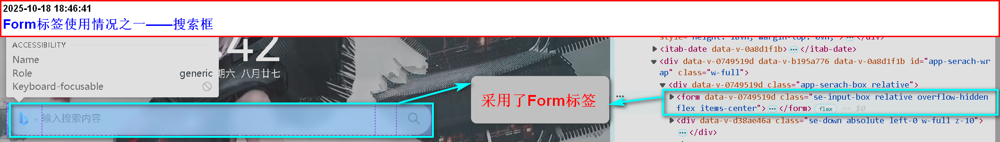
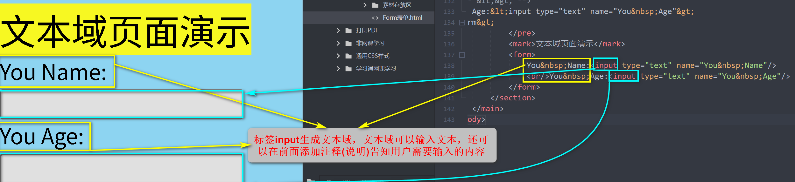
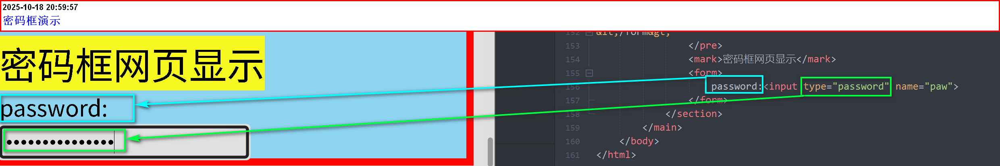
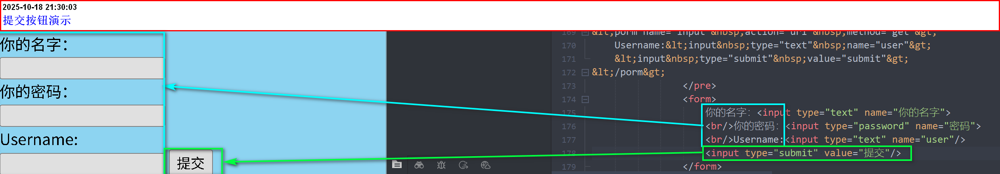

1.表单再web网页中用来给用户填写信息，从而能采用户信息，是网页具有交互的功能
2.所有的用户输入内容的地方都是用表单来写，如登入注册，搜索框等
如：

1.表单是由容器和控件组成的，一个表单一般应该包含用户填写的信息的输入框，提交按钮等，这些输入框，
2.按钮叫做控件，表单就是容器，它能够容纳各种各样的控件
表单标签Form的使用方法
<from action="url" method="get|post" name="myform"></form>| 属性说明 | action——服务器地址 | name——表单名称 |
| method中Get和post的区别 | 数据提交方式，get把提交的数据url可以看到，post看不到 | get一般用于提交少量数据，post用来提交大量数据 |
表单元素
一个完整的表单包含三个基本组成部分：表单标签，表单域，表单按钮- 表单标签
- 表单域
- 表单按钮
代码演示
<form> <input type="text"> <input type="submit"> </form>
form一些常用的标签，属性及它们的功能
- 标签input(单标签)——在网页生成输入框
- type属性中的submit(写在input标签里面)——在搜索框后添加一个[提交]按钮
- 标签button——功能与属性submit相似，同样是将输入的内容传送到另一个地方
标签及功能
form表单——总结
- form是表单的容器
- 在容器内的统称为控件
- form内部需要添加表单元素
- 记住：input、submit、button的对应功能
- 表单的作用：给用户提供一个可以输入的方式——只要是提供用户与网页的交互
- type是表单的类型，里面不同的值，会表达不同的效果，如submit就是提供一个可[提交]的按钮/li>
- 按钮跳转涉及到后端知识——服务器(不懂当前不必深究)
表单元素章节
1.文本框
1.文本域通过<input type="text">标签来设定，当用户要在表单中键入字母、数字等内容时，就会用到文本域
2.还可以在标签input前面添加注意(提醒)，用户需要输入的内容。
<form> You Name:<input type="text" name="You Name"> You Age:<input type="text" name="You Age"> </form>文本域页面演示 
2.密码框
1.密码字段通过标签<input type="password">来定义
2.密码框的特点：密码字段字符不会明文显示，而是以星号或圆点替代
<form> password<input type="password" name="pwd"> </form>密码框网页显示 
3.提交按钮
1.当用户单击确认按钮时，表单的内容会被传送到另一个文件，表单的动作属性
2.定义了目的文件的文件名。
3.由动作属性定义的这个文件通常会接收到的输入数据进行相关的处理。
4.通过submit来完成，按钮的提示文本可以用value来替换文本。
<form name="input" action="url" method="get"> Username:<input type="text" name="user"> <input type="submit" value="submit"> </form>提交按钮网页演示 
表单属性——总结
- 文本域——input标签
- 密码框——属性type的值：password
- 提交按钮——属性type的值：submit
- 属性type及它的值均在input标签内部——行内调用
- 提交按钮可以用value替换提示文本